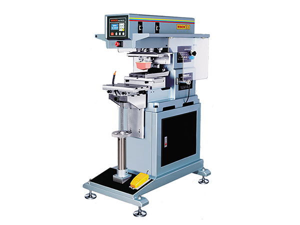
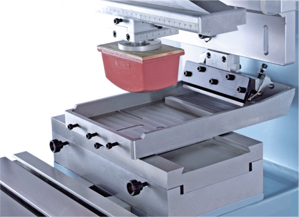
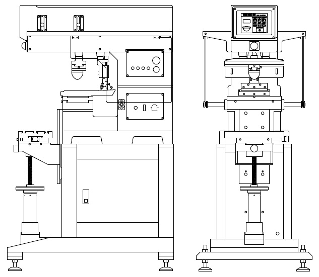

PAD PRINTING MACHINE
Winon WN-126
Automatic 1-Color Pad Printing Machine
Winon Industrial Co., Ltd. — Hong Kong
The Winon WN-126 is an automatic single-color open inkwell pad printing machine designed for precision, reliability, and consistent production performance.
Its compact design and stable pneumatic operation make it suitable for printing logos, symbols, and product markings on plastic, metal, glass, rubber, wood, and other industrial components.
Specifications
| Model | WN-126 |
|---|---|
| Printing Color | 1 Color |
| Machine Type | Automatic pad printing machine |
| Suitable Materials | Plastic, metal, glass, and industrial components |
Contact us for the complete technical specification, available configurations, and production requirements.

BUILT FOR PRODUCTION
Technical Features
Automatic Printing Operation
Automatic operation provides stable and consistent printing performance.
Precise Positioning
Adjustable positioning allows accurate alignment of different workpieces.
Easy Adjustment
Practical controls allow convenient setup and adjustment during production.
Production Ready
Designed for reliable operation in continuous industrial printing applications.
Printable Products
The Winon WN-126 is suitable for printing clear, durable logos, symbols, and markings on a wide range of industrial and consumer products.
Plastic Components
Housings, covers, buttons, switches, and molded plastic parts.
Electronic Products
Control panels, switches, housings, and electronic accessories.
Packaging Products
Bottles, caps, containers, and various packaging materials.
Promotional Items
Pens, keychains, USB drives, and customized promotional products.
Automotive Parts
Knobs, switches, interior parts, and other automotive components.
Industrial Components
Industrial parts requiring clear, permanent identification markings.
Technical Drawing
Detailed machine dimensions and layout reference to support installation planning and workspace preparation.

Machine Dimensions
Reference drawing for machine size, working area, and installation space.
Production Layout
Helps customers plan machine placement within their production environment.
Installation Reference
Provides basic reference for setup and machine preparation.
Interested in the Winon WN-126?
Contact Printway Marketing & Services for pricing, machine demonstrations, spare parts, consumables, and technical support.
Request a Quote